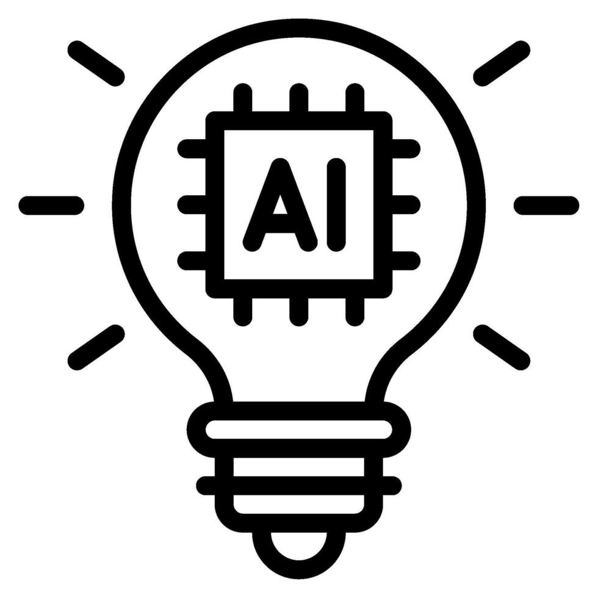

AI 리터러시: 미래 사회의 필수 능력
AI는 단순한 기술 도구가 아닌, 새로운 문해력(Literacy)의 영역입니다. AI를 이해하지 못하면 도구를 사용하는 것을 넘어 사회의 변화를 따라잡기 어렵습니다.
1. AI는 선택이 아닌 필수 기반 기술
AI는 전기나 인터넷처럼 모든 산업과 생활에 스며드는 범용 기술(GPT, General Purpose Technology)입니다. 프로그래밍, 디자인, 마케팅, 심지어 법률 분야에서도 AI 활용 능력은 기본 전제가 되었으며, 이 기술을 이해하지 못하면 도구 사용 자체에서 뒤처지게 되어 개인 및 기업의 생산성 격차가 심화됩니다. AI를 배우는 것은 미래 직업 시장에서 경쟁력을 유지하는 가장 확실한 방법입니다.
핵심 이해: AI는 특정 분야의 전문 기술이 아니라, 모든 분야의 '기본 인프라'로 자리 잡았습니다.
2. AI 윤리 및 데이터 편향에 대한 이해
AI가 내리는 결정(대출 승인, 채용 추천 등)은 강력한 사회적 영향을 미칩니다. AI가 학습한 데이터에 내재된 편향(Bias)이 결과에 미치는 영향을 이해하고, 그 결정을 비판적으로 검토하며 수정할 수 있는 능력이 중요합니다. 우리는 책임감 있는 AI 활용을 위해 기술적 지식뿐만 아니라 윤리적 기준을 함께 갖춰야 합니다.
3. 효과적인 AI 학습 전략
- **이론 학습의 기초:** 머신러닝의 기본 개념(지도 학습, 비지도 학습)과 작동 원리를 가볍게 이해하여 AI의 '블랙박스'를 해소합니다.
- **실습 경험 우선:** 코딩 지식이 없더라도 ChatGPT, Midjourney와 같은 생성형 AI 도구를 능숙하게 사용하는 실습 경험을 쌓아 '활용 능력'을 극대화합니다.
- **지속적인 관심:** 기술 변화의 속도가 빠르므로, 새로운 모델이나 트렌드에 대한 관심을 유지하고 커뮤니티를 통해 정보를 공유하며 평생 학습 시스템을 구축합니다.